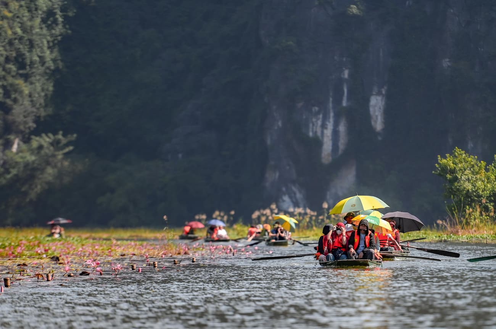
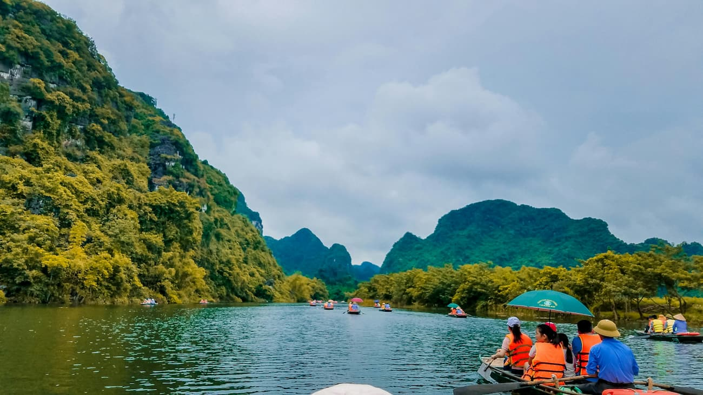

Find Your Adventure!
Whether you're looking for a peaceful float or a thrilling rapid run, we have the perfect trip for you. Contact us today to customize your experience!
Contact Our TeamFeatured Trip Packages

Desolation Canyon Multi-Day
This 4-day, 3-night trip down the Desolation Canyon is our most popular expedition. Enjoy breathtaking scenery, challenging class III rapids, and camp under the stars. Meals and gear included.
- Difficulty: Intermediate (Class III)
- Duration: 4 Days
- Best For: Nature Lovers & Intermediate Rafters

The Morning Half-Day Rush
Perfect for beginners or those short on time. This 3-hour trip covers a fun stretch of Class II-III rapids. It's a great introduction to whitewater rafting and the perfect family outing.
- Difficulty: Beginner/Intermediate (Class II-III)
- Duration: Half-Day (3 hours)
- Best For: Families & First-Timers

Thunder Blitz Full-Day
Ready for a challenge? This full-day trip features continuous Class IV rapids! Experience the thrill of intense whitewater action. Prior rafting experience is highly recommended for this trip.
- Difficulty: Advanced (Class IV)
- Duration: Full-Day (6-7 hours)
- Best For: Experienced Thrill-Seekers
All Available Rafting Trips
| Trip Name | Duration | Difficulty | Price | Available Dates |
|---|---|---|---|---|
| Desolation Canyon Multi-Day | 4 Days / 3 Nights | Class III (Intermediate) | $799 | May 15, June 10, July 5 |
| Morning Half-Day Rush | 3 Hours | Class II-III (Beginner/Intermediate) | $99 | Daily, May-September |
| Thunder Blitz Full-Day | 6-7 Hours | Class IV (Advanced) | $189 | Weekends Only, June-August |
| Sunset Scenic Float | 2 Hours | Class I (Beginner/Calm) | $75 | Daily Evening, June-August |
| Grand Canyon Expedition | 7 Days / 6 Nights | Class V (Expert) | $1,999 | Limited Seats: August 1 |